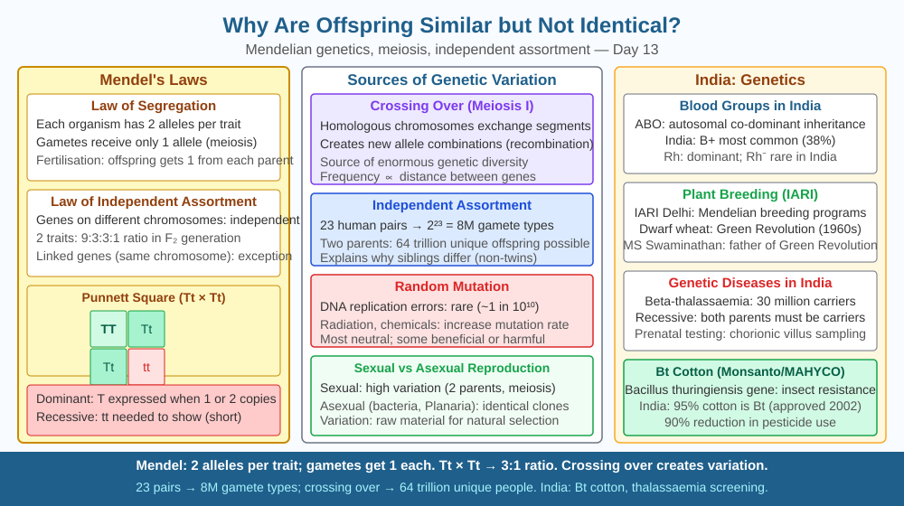

By the end of this lesson, you should be able to explain how sexual reproduction produces variation through chromosome sorting and random fertilisation, define the terms allele, homologous chromosome and independent assortment, and predict how genetic variation changes if organisms switch to asexual reproduction.
Look at any family photograph. The children resemble their parents — same nose shape, similar eye colour, recognisable smile. But no child is an exact copy of either parent, and siblings are different from each other even though they came from the same two parents. If genes are simply passed down from parent to child, why isn't each child an identical copy? And if the mixing process is random, why do children still look like their parents at all?
The answer lies in the mechanics of sexual reproduction and the way chromosomes are distributed during a special type of cell division called meiosis.
Human body cells are diploid (2n = 46) — they contain 23 pairs of chromosomes. In each pair, one chromosome came originally from the father and one from the mother. These matched pairs are called homologous chromosomes. Each chromosome carries genes at fixed positions called loci (singular: locus). The two copies of a gene at the same locus on homologous chromosomes may be identical or slightly different — these variants are called alleles.
When the body produces sex cells (gametes — sperm in males, eggs in females), it uses meiosis. During meiosis, the chromosome number is halved: each gamete ends up haploid (n = 23), carrying one chromosome from each homologous pair. The result is that each gamete has a unique combination of chromosomes.
Source of variation 1 — Independent assortment. During meiosis I, each pair of homologous chromosomes lines up at the cell's equator independently of all other pairs. This means the maternal and paternal chromosome of pair 1 sorts independently of pair 2, pair 3, and so on. With 23 pairs, the number of possible chromosome combinations in a single gamete is 2²³ = 8,388,608 — over eight million different possibilities from just the chromosome sorting step alone.
Source of variation 2 — Crossing over (recombination). During the early stages of meiosis I, homologous chromosomes pair up tightly and exchange segments of DNA at points called chiasmata. This process, called crossing over, creates new chromosomes that are mixtures of maternal and paternal DNA. It generates combinations of alleles that did not exist in either parent, dramatically expanding the range of possible genetic outcomes.
Source of variation 3 — Random fertilisation. After meiosis, one sperm (from over eight million possible types) randomly fuses with one egg (from over eight million possible types) at fertilisation. The resulting zygote therefore carries a chromosome combination selected from 2²³ × 2²³ possibilities — roughly 70 trillion different combinations, not counting the additional variation from crossing over.
Despite all this variation, offspring still resemble their parents because they still carry alleles inherited from those parents — just in new combinations. A child cannot inherit a gene for blue eyes unless at least one parent carries the allele for blue eyes. The resemblance comes from shared alleles; the differences come from how those alleles are recombined and which combination the child happened to receive.
Mutations — random, rare errors in DNA replication — add yet another, smaller source of new variation. But the dominant engine of variation in sexually reproducing organisms is the shuffling mechanism of meiosis combined with random fertilisation.
Think of each parent's genome as a deck of 23 different playing cards (chromosomes). Each parent has two copies of each card (diploid). Making a gamete is like dealing a hand of 23 cards — one card from each pair — with the added twist that some cards have been partially swapped with their partner before dealing (crossing over).
The child will always have cards from both parents — that is why resemblance occurs. But the specific combination is unique — that is why identity does not occur.
The included SVG shows:

Understanding genetic variation mechanisms has direct applications:
Q3 established that asexual reproduction dramatically reduces variation because offspring are genetic clones. Now extend this prediction: consider a species that switched entirely to asexual reproduction in a stable environment where it was thriving.
Predict: If the environment then changed suddenly — a new disease pathogen appeared, for example — what would happen to the asexually reproducing population compared with a sexually reproducing population of the same species? Connect your answer to the mechanism of variation described in this lesson, and explain why genetic diversity is particularly important in the face of new diseases.
Why do sexually reproducing offspring resemble parents but are not identical?
Correct answer: a
Why is understanding genetic variation mechanisms more useful than just noting family resemblances?
Correct answer: b
What would happen to variation if organisms reproduced only asexually?
Correct answer: c
Explain today's concept to a younger student in 60 seconds without technical jargon. Then explain it again using the correct scientific vocabulary.
If both explanations describe the same mechanism, you have understood the concept rather than memorised it.
The process of crossing over during meiosis means that no two eggs or sperm produced by one person are genetically identical to each other — they are all unique. A woman is born with roughly one to two million immature egg cells (oocytes), and each one, when it completes meiosis, will be a genetically distinct cell. The variation within a single person's own gametes is itself enormous, even before fertilisation with another person's gamete.
Sexual offspring resemble their parents because they inherit alleles from them, but are not identical because meiosis independently assorts 23 chromosome pairs — generating over 8 million gamete types — and random fertilisation combines two such gametes, producing unique allele combinations in every individual.